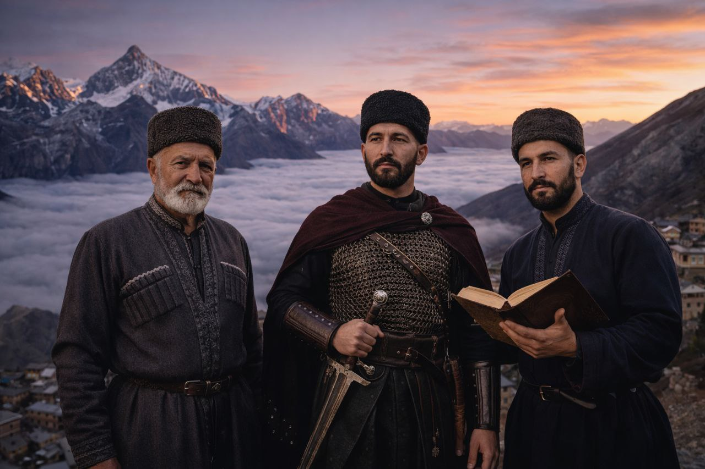

Крупнейшие народы

Аварцы
Маарулал • Самый многочисленный народАварцы (самоназвание — маарулал) составляют около 30% населения Дагестана. Проживают преимущественно в горных районах. Известны как искусные строители, воины и поэты. Аварский язык относится к нахско-дагестанской семье.

Даргинцы
Дарган • Народ мастеровДаргинцы — второй по численности народ Дагестана. Славятся своими ремёслами, особенно обработкой металла и ювелирным делом. Село Кубачи, населённое даргинцами, известно на весь мир своими серебряными изделиями.

Лезгины
Лекь • Хранители танцаЛезгины — один из древнейших народов Кавказа. Именно от их названия произошло слово «лезгинка» — знаменитый кавказский танец. Лезгины известны своим гостеприимством, отвагой и строгим соблюдением адата (кодекса чести).

Кумыки
Къумукълар • Степной народКумыки — тюркский народ, проживающий на равнине. Исторически были связующим звеном между горцами и степными народами. Обладают богатой литературной традицией, первые письменные памятники датируются XVII веком.

Лакцы
Лак • Народ учёныхЛакцы компактно проживают в центральной части горного Дагестана. Славятся высоким уровнем грамотности и тягой к знаниям. В советское время лакцы дали Дагестану множество учёных, врачей и педагогов.

Табасараны
Табасаран • Мастера ковраТабасараны — народ, прославившийся своим ковроткачеством. Табасаранские ковры занесены в Книгу рекордов Гиннесса как самые сложные по орнаменту в мире. Их язык также считается одним из самых сложных.